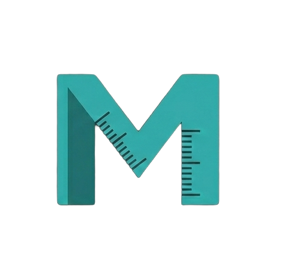
NHIT VisualLab
See It. Understand It. Learn It.
🚀 V2 WebGL & Python Physics Simulators
14 V2 Tools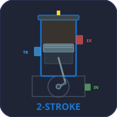
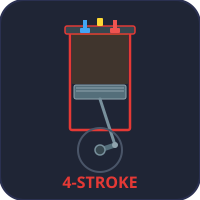
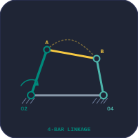
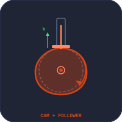
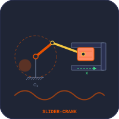
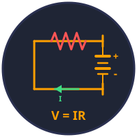
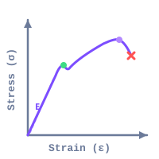
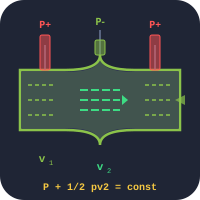
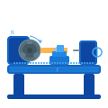
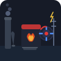
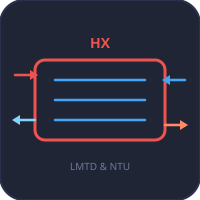
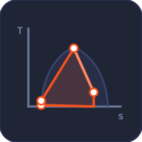
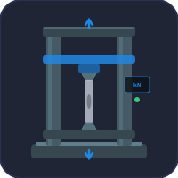
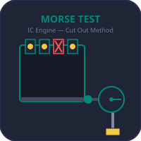
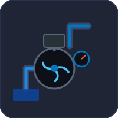
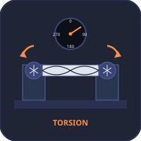
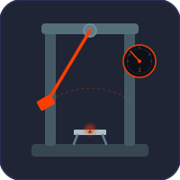
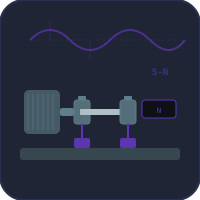
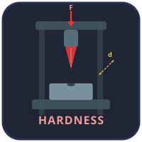
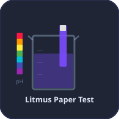
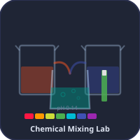
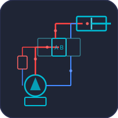
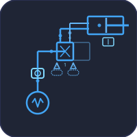
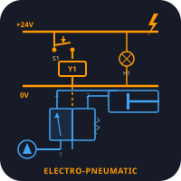
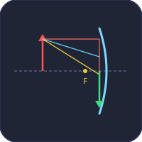
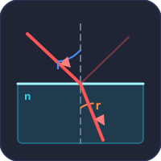
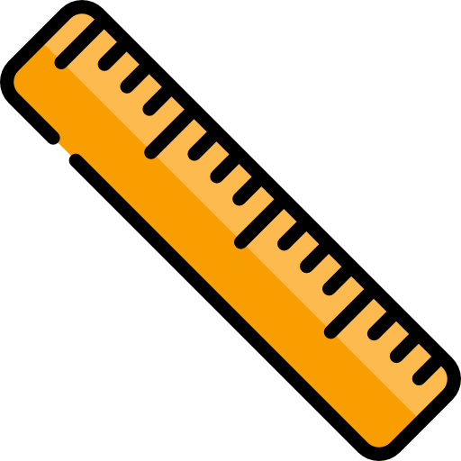
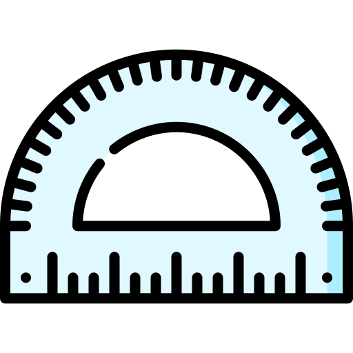
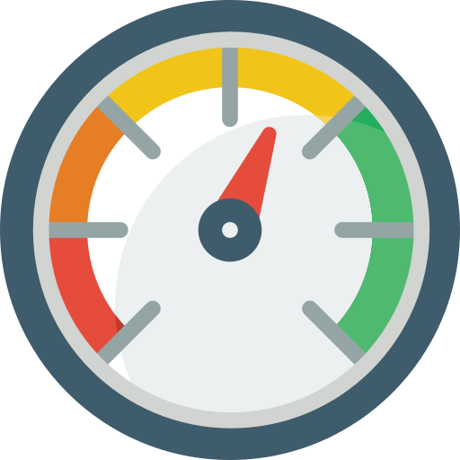
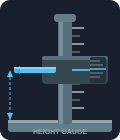
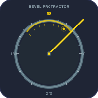
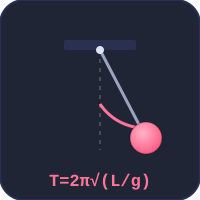
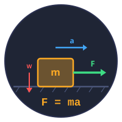
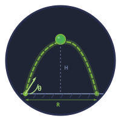
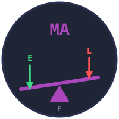
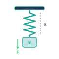
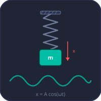
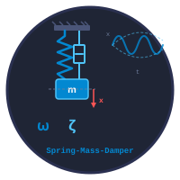
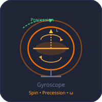
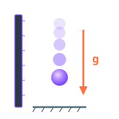
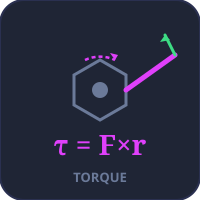
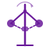
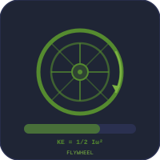
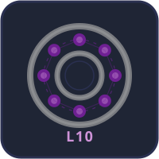
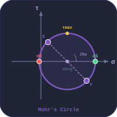
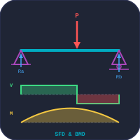
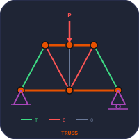
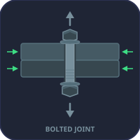
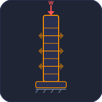
What is NHIT VisualLab?
NHIT VisualLab is a free online platform offering interactive virtual simulators for precision measurement instruments and engineering analysis tools used in mechanical engineering, manufacturing, and technical education. Whether you are a student learning metrology for the first time, studying structural analysis, or a trainer delivering hands-on workshop content, our browser-based simulators let you practise without needing physical equipment or expensive software.
Why Use a Virtual Simulator?
Learning to read precision instruments and understand engineering concepts requires repetitive practice. Traditional classroom training depends on physical tools that are expensive, fragile, and limited in quantity. NHIT VisualLab solves this by providing unlimited free practice sessions directly in your browser — on desktop, tablet, or mobile — with no installation required.
Available Simulators
- Vernier Caliper Simulator — practice reading 0.02 mm, 0.05 mm, and 0.1 mm least count scales for inside, outside, and depth measurements.
- Micrometer Screw Gauge Simulator — learn to read the barrel and thimble scales with 0.01 mm precision.
- Steel Ruler Simulator — measure lengths 0–150 mm with 0.5 mm precision.
- Protractor Simulator — measure angles 0°–180° with an interactive rotating arm and 1° least count.
- Pressure Gauge Simulator — read pressure 0–100 PSI on a dual-scale analogue gauge showing PSI, BAR and kPa.
- Dial Gauge Simulator (Dial Indicator) — read displacement 0–10.00 mm with 0.01 mm precision and revolution-counter sub-dial.
- Vernier Height Gauge Simulator — measure heights 0–120 mm from a surface plate with 0.02 mm least count.
- Tolerance & Fits Calculator — ISO 286 limits and fits system with clearance, transition and interference fit classification.
- Thread Nomenclature Trainer — ISO 261 metric thread dimensions with major, minor & pitch diameters.
- Welding Symbol Trainer — AWS A2.4 weld symbols including groove, fillet, plug, spot & seam types.
- Riveted Joints Trainer — rivet head types and lap/butt joint configurations.
- Stress-Strain Diagram — interactive curve with Hooke's Law, yield point, UTS, and Poisson's ratio.
- Hooke's Law Simulator — interactive spring simulator with F = kx, series & parallel springs.
- Pascal's Law Simulator — hydraulic press simulator with force multiplication.
- Bernoulli's Principle — Venturi effect, continuity equation, and dynamic pressure.
- Newton's Laws of Motion — inertia, F = ma, and action-reaction with free body diagrams.
- Gear Train Calculator — simple, compound & worm gear trains with animated rotation.
- Simple Machines — lever, pulley, inclined plane, wheel & axle, screw, and wedge.
- Beam Bending Calculator — draw SFD and BMD for simply supported, cantilever, and overhanging beams.
- Ohm's Law & DC Circuits — series, parallel & mixed circuits with Kirchhoff's laws.
- Thermodynamic Cycles Simulator — Carnot, Otto, Diesel, and Brayton cycles with PV diagrams.
- Projectile Motion — trajectory simulator with launch angle, velocity, and multi-planet gravity.
- Mohr's Circle — Stress Analysis — principal stresses, max shear, and stress transformation.
- Cam & Follower Mechanism — SHM, cycloidal, and uniform motion profiles with displacement diagrams.
- Vibrations — Spring-Mass-Damper — free, damped, forced & resonance modes with live waveform.
- Friction & Contact Forces — static & kinetic friction on flat surface, inclined plane, and braking.
- Four-Bar Linkage Mechanism — Grashof criterion, transmission angle, and coupler curves.
- Slider-Crank Mechanism — all 4 inversions (IC engine, Whitworth quick-return, oscillating cylinder, hand pump) with live kinematics graphs.
- Truss Analysis Simulator — analyse Warren, Pratt, and Howe trusses using the method of joints with color-coded force members.
- Flywheel Energy Storage Simulator — calculate kinetic energy, moment of inertia, hoop stress, and energy density for different flywheel types.
- Heat Transfer Modes Simulator — visualise conduction, convection, and radiation with Fourier, Newton, and Stefan-Boltzmann calculations.
- Bolted Joint Design Simulator — design metric bolted connections (M6–M24) with tensile, shear, and bearing stress analysis.
- Centrifugal Governor Simulator — simulate Watt, Porter, and Proell governors with controlling force and sensitivity analysis.
- Fluid Flow in Pipes Simulator — visualise laminar and turbulent flow with Reynolds number, Darcy-Weisbach, and pressure drop calculations.
- Simple Harmonic Motion — spring-mass and pendulum SHM with displacement, velocity, acceleration, and energy graphs.
- Spring Design Calculator — helical spring stiffness, shear stress with Wahl correction, deflection, and spring index.
- Shaft & Torsion Simulator — shear stress, angle of twist, polar moment of inertia for solid and hollow shafts.
- UTM Virtual Lab — Universal Testing Machine simulator for tensile and compression tests with real-time stress-strain curves and 7 material types.
- Bevel Protractor Simulator — measure angles with 5′ vernier least count precision and interactive blade rotation.
- SKF Bearing Selection Trainer — find a real SKF bearing from 8 types by load, speed & life, plus L10 bearing life and dynamic load rating.
- Hardness Testing Simulator — virtual Brinell, Rockwell, and Vickers hardness tests with animated indentation.
- Drilling Machine Simulator — column drill press parts identification, drilling/reaming/boring/tapping operations, and cutting parameter calculation.
- Lathe Machine Simulator — centre lathe parts identification, turning/facing/threading/boring operations, and cutting parameter calculation.
- Milling Machine Simulator — end mill, face mill, and slot drill operations with cutting speed, feed per tooth, MRR, and power calculation.
- Heat Exchanger Simulator — shell-and-tube heat exchanger with LMTD, NTU-effectiveness, parallel and counter-flow temperature profiles.
- AC Generator Simulator — rotating coil EMF generation, sinusoidal waveform, RMS voltage, frequency, and phase relationships.
- Hydraulic Circuit Simulator — hydraulic circuit design with pump, DCV, cylinder, relief valve, and force/speed/power calculations.
- CNC G-Code Simulator — write and visualise G-code tool paths with G00, G01, G02, G03 commands and animated cutter movement.
Four Learning Modes on Every Tool
Every simulator includes Simulate for interactive exploration with real-time calculations, Explore for studying key concepts with worked examples, Practice for step-by-step exercises with instant feedback, and Quiz with randomised questions and scoring — making NHIT VisualLab ideal for self-study, classroom assessment, and exam preparation in engineering diploma and apprenticeship programmes.
Latest from the Blog
All articles →Long-form companion guides to the simulators — written and peer-checked by the author. Each post pairs the equations with worked examples, classroom lesson plans, and the standards you will meet in industry.
Why Measuring Instrument Simulators Belong in Every Engineering Classroom
A teaching guide for vernier, micrometer, dial gauge and pressure-gauge simulators — including assessment ideas and TVET-curriculum alignment.
Fluid PowerFree FESTO FluidSIM Alternative — Hydraulic, Pneumatic & Electro-Pneumatic Online
A side-by-side walkthrough of the in-browser circuit builders that replace expensive desktop fluid-power software for diploma-level teaching.
Curriculum GuideLearn Mechanical Engineering with Browser-Based Simulators
A topic-by-topic roadmap from statics through to thermodynamics, mapping each course unit to the most useful free simulators on this site.